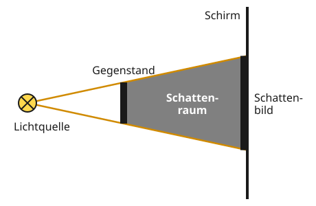
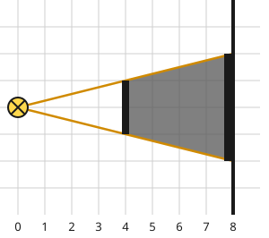

Schattenraum und Schattenbild
Mit einem KI-Tutor lernen
Ein KI-Tutor erklärt dir diese Seite und hilft dir bei den Übungen. Wähl deinen Assistenten:
Mit Claude öffnen Mit ChatGPT öffnen Mit Mistral Vibe öffnen
Du nutzt dein eigenes Konto beim Anbieter. Der Assistent ist kein Angebot von lernapps.net: lernapps liefert nur Inhalte und Übungen. Die Wahl gilt für alle Seiten, nur auf diesem Gerät.
Warum gibt es Schatten?
Im Sommer setzt du dich in den Schatten eines Baumes. Abends wirft deine Hand an der Wand den Schatten eines Hasen. Beides heißt im Alltag „Schatten“. Unter dem Baum bist du aber mitten in einem Raum, in den kein Sonnenlicht kommt. An der Wand siehst du dagegen nur eine dunkle Fläche. Die Physik hat für beides ein eigenes Wort.
Nach dieser Seite kannst du Schattenraum und Schattenbild unterscheiden und beide mit Lichtstrahlen einzeichnen. Du brauchst dafür, was du schon weißt: Licht breitet sich geradlinig aus.
So entsteht ein Schatten
Eine Lampe (die Lichtquelle) beleuchtet einen Gegenstand, der kein Licht hindurchlässt, zum Beispiel eine Streichholzschachtel. Das Licht geht geradeaus. Hinter dem Gegenstand kommt deshalb kein Licht von der Lampe an. Ganz schwarz ist es dort trotzdem meist nicht, weil Wände und Möbel ein wenig Licht zurückwerfen. Man sagt deshalb: Der Raum ist lichtarm.
- Schattenraum
Der lichtarme Raum hinter einem beleuchteten Gegenstand, der kein Licht durchlässt.
- Schirm
Eine Fläche hinter dem Gegenstand, auf der man den Schatten sieht, zum Beispiel eine Wand, eine Leinwand oder der Boden.
- Schattenbild
Die dunkle Fläche auf dem Schirm. Dort trifft der Schattenraum auf den Schirm.
Um den Schattenraum genau einzuzeichnen, zeichnest du zwei Randstrahlen: zwei Lichtstrahlen von der Lampe, die genau an der oberen und an der unteren Kante des Gegenstands vorbeigehen. Du verlängerst sie mit dem Lineal bis zum Schirm. So ein genaues Zeichnen mit dem Lineal heißt in Physik konstruieren.
- Randstrahl
Ein Lichtstrahl, der genau an einer Kante des Gegenstands vorbeigeht. Zwei Randstrahlen begrenzen den Schattenraum.

Die zwei orangen Randstrahlen begrenzen den Schattenraum. Schau, wo sie auf den Schirm treffen.
Quelle: eigene Zeichnung. Lizenz: CC-BY-4.0.So liest du die Zeichnung: Die Lampe ist der Kreis mit dem Kreuz. Die orangen Linien sind die Randstrahlen. Alles zwischen ihnen hinter dem Gegenstand ist Schattenraum (grau). Wo der Schattenraum auf den Schirm trifft, liegt das Schattenbild: der dicke Strich auf der Seite des Schirms, die zur Lampe zeigt. Weil die Strahlen von der Lampe aus auseinanderlaufen, ist das Schattenbild größer als der Gegenstand.
Merke
Hinter einem beleuchteten Gegenstand entsteht der lichtarme Schattenraum. Auf einem Schirm dahinter siehst du das dunkle Schattenbild. Du zeichnest beide mit zwei Randstrahlen, die genau an den Kanten des Gegenstands vorbeigehen.
Ausprobieren
Im Schattenlabor sind Lampe, Gegenstand und Schirm auf Kästchenpapier gezeichnet. Mit den zwei Reglern schiebst du den Gegenstand und den Schirm, immer um ganze Kästchen. Über jedem Regler steht, wie viele Kästchen der Abstand gerade ist.
Achte auf zwei Dinge: Die Randstrahlen wandern mit, und das Schattenbild (der dicke Strich am Schirm) liegt immer genau zwischen den Punkten, wo sie auf den Schirm treffen. Zähle nach, ob das Schattenbild wirklich größer ist als der Gegenstand. „Zurücksetzen“ stellt alles wieder auf den Anfang.
Das Schattenbild ist 4 Kästchen hoch. Der Gegenstand ist 2 Kästchen hoch.
Eine Lampe links beleuchtet einen Gegenstand, der 2 Kästchen hoch ist; rechts steht ein Schirm. Steht der Gegenstand 4 Kästchen von der Lampe und der Schirm 8 Kästchen, ist das Schattenbild 4 Kästchen hoch, doppelt so hoch wie der Gegenstand. Mit Reglern kann man die Abstände verschieben.
Beispiel
Schattenbild einzeichnen
Eine Lampe steht links bei 0. Ein Gegenstand, 2 Kästchen hoch, steht bei 4. Die Lampe ist genau auf Höhe der Mitte des Gegenstands. Der Schirm steht bei 8.
- Lege das Lineal an die Lampe und an die obere Kante des Gegenstands. Zeichne den Strahl bis zum Schirm.
- Mach dasselbe an der unteren Kante.
- Male den Raum zwischen den beiden Strahlen hinter dem Gegenstand dunkel an: Das ist der Schattenraum.
- Zähle auf dem Schirm von Strahl zu Strahl: Das Schattenbild ist 4 Kästchen hoch, doppelt so hoch wie der Gegenstand.

So sieht die fertige Zeichnung aus. Zähle die Kästchen des Schattenbilds selbst nach.
Quelle: eigene Zeichnung. Lizenz: CC-BY-4.0.Übung
Übung
Lösung
Richtige Antwort: A – Lichtquelle; B – Gegenstand; C – Schattenraum; D – Schirm; E – Schattenbild
Die Lampe (A) sendet Licht, der Gegenstand (B) hält es auf. Dahinter liegt der Schattenraum (C). Wo er auf den Schirm (D) trifft, entsteht das Schattenbild (E).
Mehr dazu:
Übung
Lösung
der Schattenraum richtige Antwort
Er sitzt im lichtarmen Raum hinter dem Baum. Das ist der Schattenraum.
das Schattenbild
Das Schattenbild ist die dunkle Fläche auf dem Boden. Er sitzt aber nicht in einer Fläche, sondern mitten im Raum hinter dem Baum.
der Baum selbst
Der Baum ist der Gegenstand, der das Sonnenlicht aufhält. Er sitzt nicht im Baum, sondern im Raum dahinter.
Wer im Schatten sitzt, ist im Raum hinter dem Baum, in den kein Sonnenlicht kommt.
Mehr dazu:
Übung
Lösung
das Schattenbild richtige Antwort
Die Wand ist der Schirm. Die dunkle Fläche darauf ist das Schattenbild.
der Schattenraum
Der Schattenraum ist der Raum hinter dem Gegenstand. Auf der Wand siehst du nur, wo er auf sie trifft.
der Gegenstand selbst
Der Gegenstand steht vor der Wand. Auf der Wand liegt nur seine dunkle Fläche.
Auf einer Wand siehst du immer das Schattenbild, denn die Wand ist ein Schirm.
Mehr dazu:
Aufgabe Nr. 1
Aufgabe Nr. 1
Stell dir die zwei Randstrahlen von der Lampe an den Kanten des Gegenstands vorbei bis zum Schirm vor, oder lege ein Lineal auf den Bildschirm. Zähle die Kästchen von der Lampe aus. Tippe dann alle Felder des Schirms an, die im Schattenbild liegen. Eine Lampe steht auf Höhe 5 (0 ist oben, 8 unten). Der Gegenstand steht 4 Kästchen rechts davon und reicht von Höhe 5.5 bis 6.5. Der Schirm steht 8 Kästchen rechts der Lampen und hat 8 Felder, Feld 1 oben.
Lösung
Feld 7, 8
Übung
Lösung
Richtige Antwort: Die Aussage stimmt nicht.
Die Lichtstrahlen laufen von der Lampe aus auseinander. Deshalb ist das Schattenbild auf einem Schirm hinter dem Gegenstand größer als der Gegenstand selbst.
Mehr dazu: